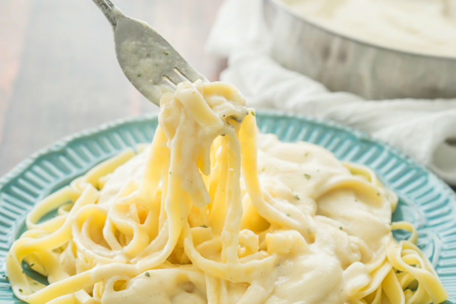
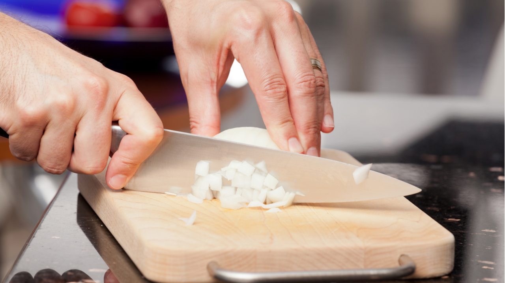
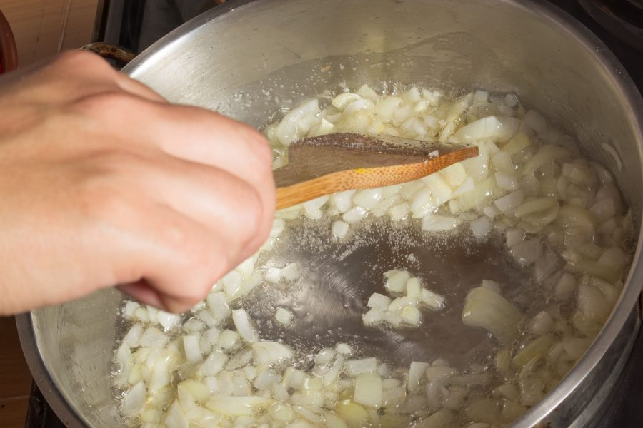
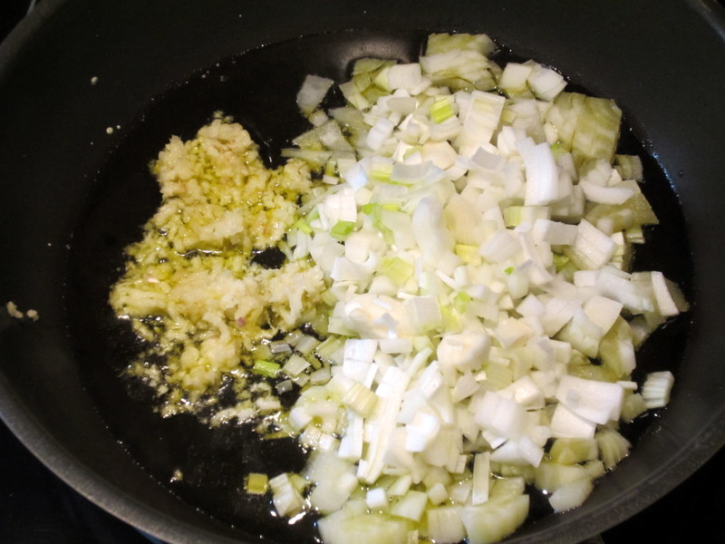
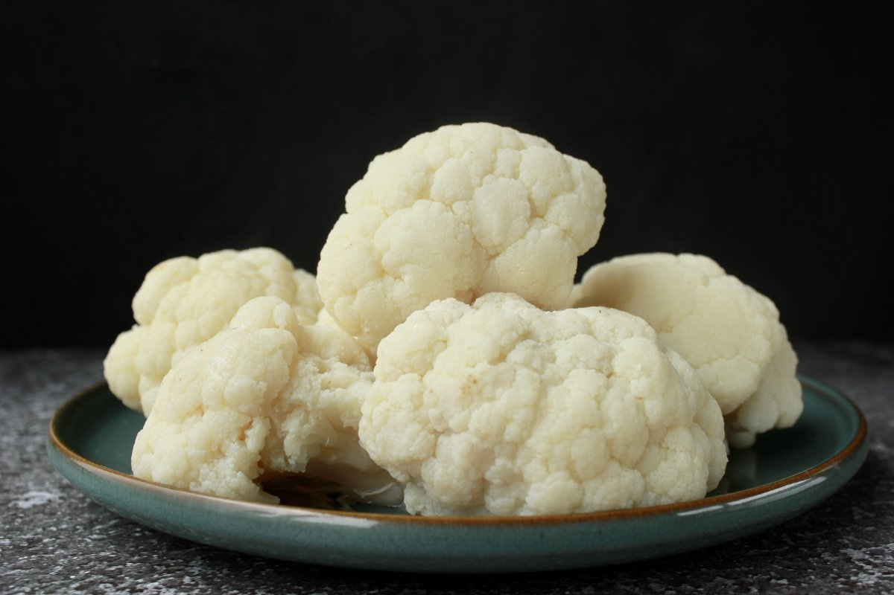
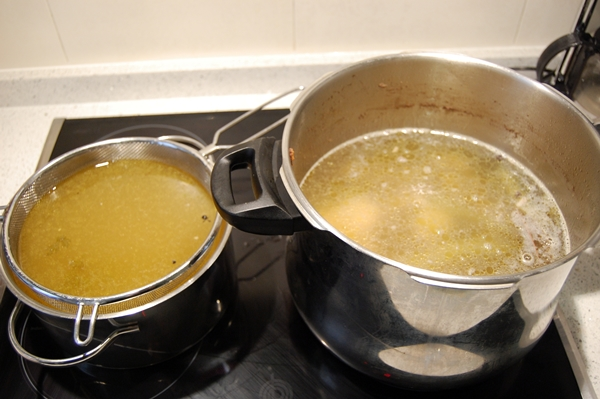
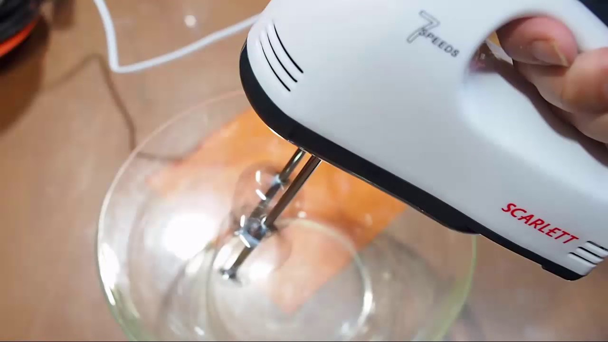

Una salsa vegana para la pasta, tan sabrosa y cremosa que resulta irresitible!
Está elaborada con coliflor y con otros ingredientes vegetales, que la convierten
en un plato muy nutritivo y saludable.
INGREDIENTES

4 cucharadas de aceite de oliva virgen extra
1 cebolla
4 dientes de ajo
500g de coliflor
2 tazas de caldo vegetal
2 cucharadas de levadura nutricional
1/2 taza de leche de almendras
sal 100g
Tiempo de elaboración
Preparación: 10 min.
Cocción: 15 min.
Tiempo Total: 25 min.
PREPARACIÓN
Picaremos bien fina la cebolla y la sofreiremos en el aceite hasta que esté translúcida.
 
Añadiremos entonces los ajos prensados o picados finos. Sofreiremos medio minuto más

Incorporaremos la coliflor troceada o separada en flores, el caldo y dejaremos cocer hasta que esté
tierna, seguramente se consumirá gran parte del líquido.
 
Echaremos la preparación en una batidora y añadiremos la leche, la levadura, los granos de
pimienta y un poco de sal al gusto. Batiremos hasta conseguir una textura fina.

Una vez esté bien batida, utilizaremos esta salsa para acompañar cualquier plato de pasta.